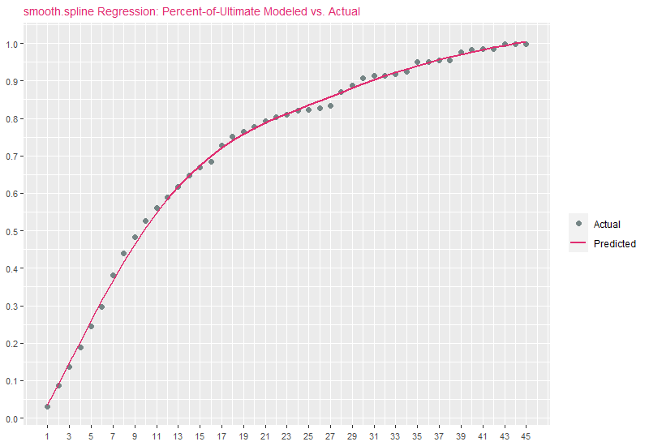
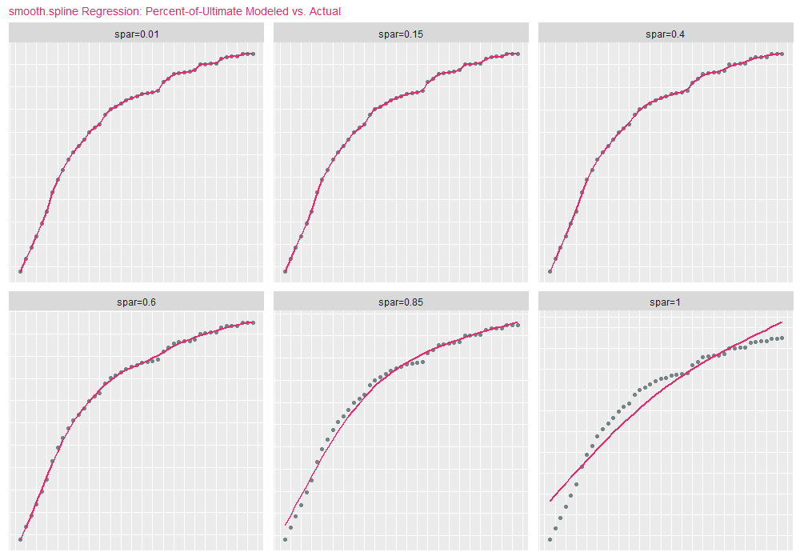

In this article, three approaches to smooth data will be demonstrated:
- standard polynomial regression
- cubic B-spline regression
- smoothing splines
The data will a set of loss development factors (LDFs) associated with an unidentified line of business. Instead of smoothing LDFs patterns directly, we first compute the cumulative loss development factors (CLDFs), then take the reciprocal to obtain Percent of Ultimate factors. Doing so will generally (not always) result in a monotonically increasing factor as a function of time. The code that follows prepares our data:
library("data.table")
library("ggplot2")
options(scipen=9999)
ldfs = c(
2.85637, 1.58402, 1.37531, 1.3001, 1.21469, 1.28128, 1.15415, 1.09783, 1.09302,
1.06395, 1.04992, 1.04659, 1.05164, 1.03117, 1.0236, 1.06338, 1.03234, 1.0172,
1.01795, 1.01813, 1.01413, 1.00863, 1.01346, 1.00372, 1.00423, 1.00683, 1.04633,
1.01796, 1.02279, 1.00629, 1.00205, 1.00316, 1.007, 1.02828, 1.00117, 1.00303,
1.00055, 1.02272, 1.00678, 1.00152, 1.00013, 1.01347, 1, 1.00071, 1.00136
)
# Compute cumulative development factors.
cldfs = rev(cumprod(rev(ldfs)))
# Compute percent-of-ultimate factors.
pous = 1 / cldfs
DF = data.table(
xinit=1:length(pous), ldf0=ldfs, cldf0=cldfs, y=pous,
stringsAsFactors=FALSE
)
# Rescale `dev` to fall between 0-1.
DF[,x:=seq(0, 1, length.out=nrow(DF))]
setcolorder(
DF, c("xinit", "x", "y", "ldf0", "cldf0")
)Fields in DF are defined as follows:
xinit: Original development period. 1 <=xinit<= 45.x:xinitrescaled to [0,1].y: Percent-of-ultimate factors.ldf0: Original unsmoothed loss development factors.cldf0: Original unsmoothed cumulative loss development factors.
Inspecting our data yields:
xinit x y ldf0 cldf0
1: 1 0.00000000 0.03022475 2.85637 33.085464
2: 2 0.02272727 0.08633308 1.58402 11.583045
3: 3 0.04545455 0.13675333 1.37531 7.312436
4: 4 0.06818182 0.18807822 1.30010 5.316937
5: 5 0.09090909 0.24452049 1.21469 4.089637
6: 6 0.11363636 0.29701659 1.28128 3.366815
7: 7 0.13636364 0.38056142 1.15415 2.627697
8: 8 0.15909091 0.43922497 1.09783 2.276738
9: 9 0.18181818 0.48219434 1.09302 2.073853
10: 10 0.20454545 0.52704806 1.06395 1.897360
11: 11 0.22727273 0.56075279 1.04992 1.783317
12: 12 0.25000000 0.58874556 1.04659 1.698527
13: 13 0.27272727 0.61617522 1.05164 1.622915
14: 14 0.29545455 0.64799451 1.03117 1.543223
15: 15 0.31818182 0.66819250 1.02360 1.496575
16: 16 0.34090909 0.68396184 1.06338 1.462070
17: 17 0.36363636 0.72731134 1.03234 1.374927
18: 18 0.38636364 0.75083259 1.01720 1.331855
19: 19 0.40909091 0.76374691 1.01795 1.309334
20: 20 0.43181818 0.77745617 1.01813 1.286246
21: 21 0.45454545 0.79155145 1.01413 1.263342
22: 22 0.47727273 0.80273607 1.00863 1.245739
23: 23 0.50000000 0.80966368 1.01346 1.235081
24: 24 0.52272727 0.82056176 1.00372 1.218677
25: 25 0.54545455 0.82361425 1.00423 1.214161
26: 26 0.56818182 0.82709813 1.00683 1.209046
27: 27 0.59090909 0.83274721 1.04633 1.200845
28: 28 0.61363636 0.87132839 1.01796 1.147673
29: 29 0.63636364 0.88697745 1.02279 1.127424
30: 30 0.65909091 0.90719167 1.00629 1.102303
31: 31 0.68181818 0.91289790 1.00205 1.095413
32: 32 0.70454545 0.91476934 1.00316 1.093172
33: 33 0.72727273 0.91766001 1.00700 1.089728
34: 34 0.75000000 0.92408363 1.02828 1.082153
35: 35 0.77272727 0.95021672 1.00117 1.052392
36: 36 0.79545455 0.95132847 1.00303 1.051162
37: 37 0.81818182 0.95421100 1.00055 1.047986
38: 38 0.84090909 0.95473581 1.02272 1.047410
39: 39 0.86363636 0.97642741 1.00678 1.024142
40: 40 0.88636364 0.98304759 1.00152 1.017245
41: 41 0.90909091 0.98454182 1.00013 1.015701
42: 42 0.93181818 0.98466981 1.01347 1.015569
43: 43 0.95454545 0.99793331 1.00000 1.002071
44: 44 0.97727273 0.99793331 1.00071 1.002071
45: 45 1.00000000 0.99864185 1.00136 1.001360
xinit x y ldf0 cldf0Smoothing via Polynomial Regression
Polynomial regression is similar to standard linear regression, except the design matrix contains x raised to the desired power in each column. For example, assuming we have independent value x given by:
x = c(2, 4, 7, 5, 2)Instead of regressing a response y on x alone, polynomial regression fits y using the matrix X:
1 2 3
[1,] 2 4 8
[2,] 4 16 64
[3,] 7 49 343
[4,] 5 25 125
[5,] 2 4 8Notice each column represents x raised to the power in the column header. The first column is \(x^{1}\), the second \(x^{2}\) and the third \(x^{3}\). Creating the design matrix in R can be accomplished using the poly function. Next we create the design matrix X and fit a polynomial regression model of degree 3 to our data:
X = poly(DF$x, degree=3, raw=TRUE)
y = DF$y
# Combine design matrix with target response y (pous).
DF1 = setDT(cbind.data.frame(X, y))
# Call lm function. On RHS of formula, `.` specifies all columns in DF1 are to be used.
mdl = lm(y ~ ., data=DF1)
# Bind reference to fitted values as yhat1.
DF[,yhat1:=unname(predict(mdl))]A visualization overlaying polynomial regression estimates with original percent-of-ultimate factors is presented below (this code will be reused for all exhibits that follow, with inputs updated as necessary):
exhibitTitle = paste0("Polynomial Regression: Percent-of-Ultimate Modeled vs. Actual")
ggplot(DF) +
geom_point(aes(x=xinit, y=y, color="Actual"), size=2) +
geom_line(aes(x=xinit, y=yhat1, color="Predicted"), size=1.0) +
guides(color=guide_legend(override.aes=list(shape=c(16, NA), linetype=c(0, 1)))) +
scale_color_manual("", values=c("Actual"="#758585", "Predicted"="#E02C70")) +
scale_x_continuous(breaks=seq(min(DF$xinit), max(DF$xinit), 2)) +
scale_y_continuous(breaks=seq(0, 1, .1)) + ggtitle(exhibitTitle) +
theme(
plot.title=element_text(size=10, color="#E02C70"),
axis.title.x=element_blank(), axis.title.y=element_blank(),
axis.text.x=element_text(angle=0, vjust=0.5, size=8),
axis.text.y=element_text(size=8)
)There is a generally good fit to actuals, but notice that for later development periods, estimates are increasing upward rather than leveling off asymptotically toward 1.0. This is one of the drawbacks of polynomial regression: The bases are non-local, meaning that the fitted value of \(y\) at a given value \(x=x_{0}\) depends strongly on data values for \(x\) far from \(x_{0}\). In modern statistical modeling applications, polynomial basis-functions are used along with new basis functions such as splines, introduced next.
Smoothing via B-Spline Regression
B-spline regression remedies the shortcomings of polynomial regression, namely the issue of non-locality. I’m going to demonstrate the usage of B-splines within the context of R rather than delve into the mathematical details. For an in-depth overview of B-splines, refer to Elements of Statistical Learning, specifically chapter 5.
To perform B-spline regression in R, the bs function is used to generate the B-spline basis matrix for a polynomial spline. The number of spline knots to use is specified, along with the degree of polynomial to use (defaults to 3). We then generate the knot locations using the range of our independent value (x) and the number of knots using the seq function. Techniques can be used to minimize a cost function, such as LOOCV to minimize average MSE in order to determine the optimal number of knots, but we omit this step and instead arbitrarily choose 5 knots for the purposes of demonstration. As a rule-of-thumb, more knots leads to higher variance and lower bias.
library("splines")
y = DF$y
nbrSplineKnots = 5
# Knot locations using data min/max and nbrSplineKnots.
knotsSeq = seq(min(DF$x), max(DF$x), length.out=nbrSplineKnots)
# Create basis matrix using splines::bs. degree=3 represents cubic spline.
Bbasis = bs(DF$x, knots=knotsSeq, degree=3)
# Drop columns containing only a single value.
Bbasis = as.matrix(Filter(function(v) uniqueN(v)>1, as.data.table(Bbasis)))
# Combine design matrix with target y (pous).
DF2 = setDT(cbind.data.frame(Bbasis, y))
# Fit B-spline regression model.
mdl2 = lm(y ~ ., data=DF2)
# Bind reference to fitted values as yhat2.
DF[,yhat2:=unname(predict(mdl2))]Running the same ggplot2 code from before, replacing yhat1 with yhat2, we obtain:

Polynomial regression and B-spline estimates are similar, but B-spline estimates exhibit better behavior in the later periods, with estimates far less influenced by erratic observations, while also approaching 1.0 on the right. The B-spline fit exhibits a good trade-off between bias and variance.
Smoothing via smooth.spline
\(\{x_{i},Y_{i}:i=1,\dots ,n\}\), which we model by \(Y_{i} = f(x_{i}) + \epsilon_{i}\), where \(\epsilon_{i}\) are zero mean random errors. The cubic smoothing spline estimate \(\hat{f}\) of the function \(f\) is defined to be the minimizer of:
\[ \sum _{i=1}^{n}[Y_{i}-{\hat {f}}(x_{i})]^{2}+\lambda \int {\hat {f}}''(x)^{2}dx, \]
where \(\lambda \geq 0\) is a smoothing parameter wehich controls the bias variance trade-off. With respect to the smooth.spline function, \(\lambda\) is identified as spar, where 0 <= spar <=1. As spar approaches 1, the fit resembles linear regression (low variance / high bias). As spar approaches 0, the fit resembles interpolation (high variance / low bias). For the purposes of demonstration, we set spar=.70 and df (degrees of freedom) to the number of records in the data:
smoothParam = .70
yhat3 = smooth.spline(DF$x, DF$y, df=nrow(DF), spar=smoothParam)$y
DF[,yhat3:=yhat3]yhat3 vs. percent-of-ultimates:

It comes as no surprise that smooth.spline predictions are similar to B-spline estimates. To demonstrate how changing spar modifies the nature of the curve, we present the next code block, which fits the original percent-of-ultimate data using smooth.spline for 6 values of spar:
library("foreach")
targetSpar = c(.01, .15, .40 , .60, .85, 1.0)
DF3 = foreach(
i=1:length(targetSpar), .inorder=TRUE, .errorhandling="stop",
.final=function(ll) rbindlist(ll, fill=TRUE)
) %do% {
currSpar = targetSpar[[i]]
currDF = DF[,.(xinit, x, y)]
sparID = paste0("spar=", round(currSpar, 2))
mdl = smooth.spline(currDF[,x], currDF[,y], df=nrow(currDF), spar=currSpar)
currDF[,`:=`(yhat=mdl$y, id=sparID, spar=currSpar)]
}
ggplot(DF3) +
geom_point(aes(x=xinit, y=y, color="Actual"), size=1.5) +
geom_line(aes(x=xinit, y=yhat, color="Predicted"), size=.75) +
scale_color_manual("", values=c("Actual"="#758585", "Predicted"="#E02C70")) +
scale_x_continuous(breaks=seq(min(DF3$xinit), max(DF3$xinit), 2)) +
scale_y_continuous(breaks=seq(0, 1, .1)) +
facet_wrap(facets=vars(id), nrow=2, scales="free", shrink=FALSE) +
ggtitle("smooth.spline Regression: Percent-of-Ultimate Modeled vs. Actual") +
theme(
plot.title=element_text(size=10, color="#E02C70"),
axis.title.x=element_blank(), axis.title.y=element_blank(),
axis.text.x=element_blank(), axis.text.y=element_blank(),
legend.position="none", panel.grid.major=element_blank(),
axis.ticks=element_blank()
)spar=1 is the lower-right facet (lowest variance/highest bias), and spar=.01 the upper-left facet (highest variance/lowest bias):
